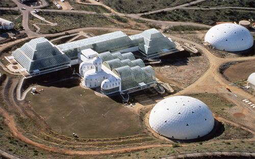

Welcome to Vol. 10 No. 3 of Design Science News, the e-bulletin of the Buckminster Fuller Institute
Design Science News brings you important updates about BFI’s programs and activities as well as news from around the world related to humanity’s option for success and comprehensive design science.Thirty-three outstanding Challenge entries advanced to the final stage of review
After a rigorous review process the pool of entries to the 2009 Buckminster Fuller Challenge has been narrowed down to thirty-three finalists. These entries set forth a diverse range of solutions to our most pressing problems from energy to poverty to transportation to water to land use issues, but the common threads of comprehensive anticipatory design science run through each of them. The jurors certainly have a tough decision to make this year!
Visit the program website to read the full press release including the titles of the thirty-three entries still in the running to win the Challenge.
2009 Challenge conferring ceremony announced
The 2009 Buckminster Fuller Challenge prize will be awarded on June 6th, 2009 at the Museum of Contemporary Art, Chicago to coincide with the acclaimed exhibition Buckminster Fuller: Starting With the Universe, which is on view at the museum from March 14th to June 21st. The winner of the Challenge will be presented with a $100,000 prize and the beautiful OmniOculi sculpture created by artist Tom Shannon.The conferring ceremony will be followed by a celebration and reception headlined by Bruce Mau, Creative Director of Bruce Mau Design and co-founder of the Institute Without Boundaries.
More details about these and other events will be forthcoming over next few weeks. We hope to see you there!
New Dymaxion Fold-Up Globes available in our online store

A new version of the Dymaxion Fold-Up Globe is now available. This version is based on Fuller’s popular Air/Ocean Dymaxion map which presents the world’s temperature zones shaded in attractive colors with updated city names. The globe punches out and folds up into a 5-1/2 inch icosahedron globe to illustrate the synergetic geometric principles behind this revolutionary map design.
Find out more about the Dymaxion Map
Purchase a copy from our online store
Job opportunity at the Buckminster Fuller Institute: Program Coordinator
Click here for more details about the job opening and to learn how to applyTRENDS & PERSPECTIVES
Digital mapping tools and the power of citizen journalists
More and more, mapping tools are being used for real-time data collection. Some of the slickest - and most helpful - uses have been in the area of crisis warning and humanitarian issues. To be able to centralize and contextualize information from seemingly random places and from a variety of different platforms has multiple benefits.
Officially launched in late Fall 2008 (just in time for the San Francisco fires), CrisisWire is the brain child of Nate Ritter, who popularized the hashtag on Twitter. During the San Diego fires of 2007, he used #sandiegofire to document his experience and offer on-the-ground updates during the crisis. This combined with Twitter’s various search capabilities enabled people in the area to receive pertinent information about what was happening in real-time - information that mainstream media wasn’t able to provide at such a detailed or timely level.
From this came the idea of CrisisWire. Using a mix of tools - including Google Maps, Twitter, Blogs, Flickr, SMS and news websites - it aggregates as much information as it can concerning a specific crisis or disaster. Text, photos and videos tagged with specific keywords appear on one page so a clear picture of what is currently happening is possible. Then they are mapped based on location.
As Nate explains to Mashable’s Mark Hopkins, “During a disaster people spend valuable time searching the Internet and waiting for the media to report on their city, their neighborhood, their street. While mainstream media serves a vital role during disasters, it is impossible to update the population on everything that is happening during a crisis.” (Source: Pop! Tech)
Related:
» Uganda to carry out digital soil mapping
» Mapping green businesses, if not jobs
Science stimulus

Barack Obama has proven to be an impresario at selling new policies - and at selling himself as the best man to implement them. On the stump a year ago he promised a no-nonsense, let’s-fix-this approach to the nation’s mounting social and economic ills. His campaign pledges ranged from making health care insurance universally affordable to fixing schools to assuring that tax credits supporting industrial research and development wouldn’t expire.
The research community appears optimistic that the new president will follow through with as much as Congress allows. Many experts say they are impressed with the cadre of politically astute science and biomedical advisers that President Obama has already mustered to work for his White House and with Congress.
No surprise to anyone, “The real problem is going to be the economy,” observes physicist Leon Lederman, a Nobel laureate and former director of the Fermi National Accelerator Laboratory in Batavia, Ill.
Federal funding for science has been eroding over the past eight years, Lederman says. Meanwhile, the nation is in a recession, continues to direct huge sums of money into overseas wars and the importation of oil, faces an expected $1.2 trillion budget deficit this year, and strains under a national debt exceeding $10.6 trillion.
Against that backdrop, Lederman believes that reversing federal funding trends in science and engineering will prove a challenge. However, he adds, based on conversations with his former senator, Obama, “I’m convinced that he has an unusual grasp of science. Not that he can write down a differential equation. But Obama understands science in a deep way and reveals it by commenting on the beauty of new discoveries.”
“To me, he deserves three checks for clearly understanding the power of science.”
Related:
» Science and technology related stimulus spending
Salt solution: cheap power from the river’s mouth
Stand on the banks of the Rhine where it flows into the North Sea, near the port of Rotterdam in the Netherlands, and you’ll witness a vast, untapped source of energy swirling in the estuary. According to Dutch engineer Joost Veerman, it’s possible to tap this energy without damaging the environment or disrupting the river’s busy shipping. For rather than constructing a huge barrage or dotting the river bed with turbines, Veerman and his colleagues at Wetsus, the Dutch Centre for Sustainable Water Technology in Leeuwarden, believe they can tap energy locked up in the North Sea’s saltwater by channelling it, along with fresh water from the Rhine, into a novel kind of battery. With a large enough array of these batteries, he says, the estuary could easily provide over a gigawatt of electricity by a process they've called Blue Energy - enough to supply about 650,000 homes.
“Salinity power” exploits the chemical differences between salt and fresh water, and this project only hints at the technology’s potential: from the mouth of the Ganges to the Mississippi delta, almost every large estuary could produce a constant flow of green electricity, day and night, rain or shine, without damaging sensitive ecosystems or threatening fisheries (see map). One estimate has it that salinity power could eventually become a serious power player, supplying as much as 7 per cent of today’s global energy needs.
In an attempt to prove that this isn’t just a pipe dream, Veerman’s team has done lab tests on a prototype salinity power generator, and are now planning to scale it up. Yet a group of Norwegian engineers have gone one stage further, with their own twist on salinity power.
In the next few months, engineers at Norwegian power company Statkraft plan to throw the switch on the world’s first salinity power station. Though their prototype is small, its impact could be huge. So what are these rival technologies, how do they stack up, and what are the obstacles to making electricity wherever rivers meet the sea? (Source: New Scientist)
Related:
» Seawater greenhouses to bring life to the desert
(The project referenced in this article is one of the thirty-three 2009 Buckminster Fuller Challenge finalists)
Buckyballs could keep water systems flowing
Spherical carbon molecules known as buckyballs may be able to keep the nation’s water pipes clear in the same way clot-busting drugs prevent arteries from clogging up.
Engineers at Duke University have found that buckyballs hinder the ability of bacteria and other microorganisms to accumulate on the membranes used to filter water in treatment plants. They think that coating pipes and membranes with these nanoparticles may prove to be an effective strategy for addressing one of the major problems and costs of treating water.
“Just as plaque can build up inside arteries and reduce the flow of blood, bacteria and other microorganisms can over time attach and accumulate on water treatment membranes and along water pipes,” said So-Ryong Chae, post-doctoral fellow in Duke’s environmental and civil engineering department. The results of his experiments were published March 5 in the Journal of Membrane Sciences. (Source: Water & Wastewater)
RESOURCES
SEED: The universe in 2009
SEED Magazine has launched a beautiful, rich new feature called The Universe in '09. In their own words: "In 2009, we are celebrating curiousity and creativity with a dynamic look at the very best ideas that give us reason for optimism. Rethink your assumptions, and pose better questions about the future: Welcome to the Universe in 2009."
Check it out
We are pleased to have SEED Founder and Editor-in-Chief Adam Bly serving as one of the 2009 Buckminster Fuller Challenge jurors.
Incredible photos of Bucky and his work in the LIFE Magazine photo archive

Search millions of photographs from the LIFE photo archive, stretching from the 1750s to today. Most were never published and are now available for the first time through the joint work of LIFE and Google.
Try searches for "Buckminster" and "Dymaxion" to pull up some amazing photos.
Thanks to Bonnie DeVarco for letting us know about this great resource!
Peter J. Pearce Designs
Photo of Biosphere 2 in Oracle, Arizona
Accomplished product designer and longtime friend of the Institute, Peter J. Pearce has launched a beautiful new website featuring his work as a designer, author, researcher, and photographer.
Pearce is perhaps best known for designing the frame and glazing materials that make up the physical structure of Biosphere 2, but has also developed a number of experimental stuctures, including the Pearce Ecohouse, a finalist in last year's Buckminster Fuller Challenge. His new site is a great resource for anyone interested in nature's structural principles.
A 20-year tale of hope: How we re-grew a rainforest
By piecing together a complex ecological puzzle, biologist Willie Smits has found a way to re-grow clearcut rainforest in Borneo, saving local orangutans - and creating a thrilling blueprint for restoring fragile ecosystems.
See more at TED.com
EVENTS
Buckminster Fuller: Starting with the Universe opening celebration
Museum of Contemporary Art220 East Chicago Ave.
Chicago, IL
Friday, March 13, 2009, 6-9 pm
$40 per person, $35 for MCA Members. Children 12 and under are admitted free
PURCHASE TICKETS ONLINE
Join the MCA for a night of revelry and celebration. They are opening the museum’s doors for a three-floor fundraising event in honor of the new spring exhibition, Buckminster Fuller: Starting with the Universe. Proceeds from this event directly support the programs of the MCA.
Tickets include food, two complimentary beverages, and live entertainment in addition to museum admission.
FOURTH FLOOR
Celebrate the spectacular exhibition, Buckminster Fuller: Starting with the Universe, newly expanded for this presentation to highlight Fuller’s Chicago connections.
MAIN FLOOR
Savor the scintillating sounds of the Josh Berman Trio and DJ Madrid as you enjoy superb hors d’oeuvres and drinks catered by Wolfgang Puck’s.
GROUND FLOOR
Throughout the evening, screen films about Fuller, introduced by exhibition cocurators Michael Hays and Dana Miller of the Whitney Museum of American Art, and Elizabeth Smith, the MCA’s Chief Curator and Deputy Director for Programs.
Rovaté 2009: Fissures, Futures (for Buckminster Fuller)
May 22 & 23, 2009
8PM
Kanbar Hall, JCCSF
3200 California Street
San Francisco, CA
Tickets: 415.292.1233 or jccsf.org
$24 public, $21 JCCSF members, $16 students
Rova:Arts in conjunction with the San Francisco International Arts Festival and Jewish Community Center San Francisco presents Fissures, Futures (for Buckminster Fuller).
Rova Saxophone Quartet returns to Kanbar Hall for another no-sounds-barred evening of improvisatory collaboration. Acclaimed Berlin-based multimedia artist/wunderkind Lillevan, joins international music giants from the field of improvised music to perform Fissures, Futures, a set of pieces dedicated to the visionary genius that was Buckminster Fuller. Live music and digital animation will lock themselves into a continuous feedback loop - with the music influencing the real-time film’s creation and the film images inspiring the music. Not to be missed. Both shows will be recorded live for future DVD release.
To unsubscribe from this newsletter, send email to this address.
To never receive email from The Buckminster Fuller Institute, send email to this address.
This email is sent from:
The Buckminster Fuller Institute
{domain.address}